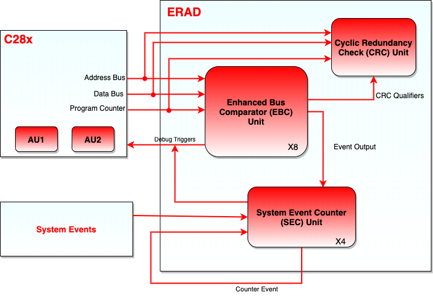
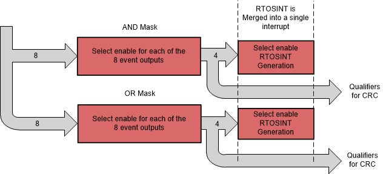

Embedded Real-time Analysis and Diagnostic (ERAD)#
C2000 real-time microcontrollers architecture includes a new and advanced peripheral Embedded Real-time Analysis and Diagnostic (ERAD). The ERAD module enhances the debug and system analysis capabilities of the device. This module facilitates sophisticated non-intrusive detection and monitoring of the CPU operation in real-time. The debug and system analysis enhancements provided by the ERAD module are implemented external to the CPU.
ERAD Module
Not all C2000 devices have an ERAD module. Refer to the Peripheral Reference Guide for a list of supported modules on your device.
What is ERAD module?#
The C28x CPU alone has two analysis resources; Analysis Unit 1 (AU1) and Analysis Unit 2 (AU2). The first analysis unit counts events or monitors address buses. The second analysis unit monitors address and data buses. The two analysis units can be configured for hardware breakpoints or hardware watch points, and additionally the first analysis unit can be configured as a benchmark counter or event counter.
The ERAD module further expands the debugging capability by providing:
Additional hardware breakpoints
Hardware watch points
Counters for profiling
Other advanced features
The ERAD module can be utilized by the debugger, and also by the application software. For many real-time systems, it is not always possible to connect a debugger and perform an intrusive debug. Under these situations, the user’s code has the ability to set up and control the ERAD module in order to debug and profile the system without disturbing the end application.
Block Diagram of ERAD module#
The ERAD module consists of two blocks:
Enhanced Bus Comparator (EBC)
System Event Counter (SEC)
Figure below shows the block diagram of ERAD module.

Enhanced Bus Comparator (EBC)#
The EBC units connect to the CPU similar to any standard direct memory interface connection. The program space buses, data space buses, debug qualifiers for memory access, and debug-related strobes necessary for breakpoints, watch points and trace points, are connected between the CPU and these units. The EBC units are usually controlled by the debug software. However, a CPU application code can also configure and use these units for interrupt and event generation. The ERAD module can be owned by either the debugger or the application software through the memory-mapped registers.
Capabilities of EBC Unit#
The EBC unit has the following capabilities:
Generate hardware breakpoints
Generate hardware watch points
Generate trace tags for instruction fetch matches and generate real-time interrupt
Monitor data read address buses, data write address buses, data write data bus, and generate real-time interrupt
Generate an event output which can be used by other modules. This is done through monitoring any of the program address buses, Virtual Program Counter (VPC), or the Program Counter of the CPU.
Operation of EBC Unit#
The following operations are supported by the EBC unit:
Operation of a hardware breakpoint: The EBC unit will generate the appropriate tags for an access made to a particular address. When the instruction is going to enter the DECODE 2 (D2) phase of the pipeline, the CPU is halted.
Operation of a watch point: The watch points will detect the occurrence of a data memory read or write, and will halt the CPU at the next interruptible boundary.
Operation of program trace: This operation is very similar to the hardware breakpoint operation. The difference between the CPU behavior is that it will internally generate an real-time interrupt when the tagged instruction reaches the DECODE 2 (D2) phase of the pipeline. If this instruction is discarded in the fetch buffer due to discontinuity, then no real-time interrupt will be generated.
Operation of real-time interrupt: This is an alternative to a watch point where an interrupt can be generated to the CPU on detecting the designated read and write access.
It is important to note that a hardware breakpoint will only halt the CPU if a debugger is connected.
EBC Unit - Event Masking and Exporting#
The events generated by different EBC units can be combined using OR and AND logics to generate new events as required. There are four AND and four OR combinations that could be exported using masks to suppress unnecessary events. These events may also be configured to generate an real-time interrupt.
Note:
Option to generate real-time interrupt is not supported on TMS320F28004x.
System Event Counter (SEC)#
The SEC units provide better system profiling, analysis, and debug capability. The SEC units contain counters which enhances the debug and profiling process in various types of system scenarios such as:
Profiling code segments
Counting duration between specified memory reads and writes
Counting system events (such as interrupts)
Counting duration between system events
System timer
Measuring the number of wait states in code segments
Measuring the maximum amount of time spent in between a pair of events, measured over multiple iterations
Chaining counters in order to link events or create larger counters
Capabilities of SEC#
The SEC unit has following capabilities:
Function as a counter capable of counting:
Any of the match events generated by the EBC units
Events generated by the EBC units. These events can be used to start and stop the counting.
System events including the PIE interrupts, timer interrupts, and CLA task interrupts. These system events can be used to start and stop the counting.
More information on the sources of the SEC units can be found at the Event Selector Mux Signals Table.
Generate an interrupt or a watch point if the count reaches a reference value.
Operate in counting mode in one of the following two modes:
Duration mode: The counter will count the CPU cycles as long as the event is active.
Event mode: The counter will count only the positive edge of the event signal. This is effectively counting the number of times the event transitions from inactive to active.
System Event Counter Modes#
The following are the key features of the SEC unit. The counters are initialized to zero and will always count up.
Continuous Count: In this mode the counter continues to count as specified by the input selector. If the counter reaches the maximum value, it resets to zero and will continue to count up. A sticky overflow bit will be set to indicate that this counter had overflowed. The counter can count the CPU cycles without any events selected. In this mode the module can be used as a software controlled SYSCLK counter.
Timer Mode Count: In this mode, the counter counts up to a set reference value and after reaching the reference value, it resets to zero. The counter will generate an event that can send an interrupt to the CPU or generate a watch point. The counter can be set up to either continue incrementing or reset when a match event occurs.
Start-Stop Count: In this mode, two events are allowed to act as start and stop indicators to the counter. The counter will commence counting only when the defined start event occurs. The counter will then continue to count up until the stop event occurs. Once the first start event has occurred, further start events will be ignored till the stop event occurs.
Counting Active Levels Versus Edges#
The SEC units can be configured to either count active levels or edges of the selected inputs. Each SEC unit has eight inputs from the EBC units and many inputs from other events in the device. Each SEC unit can be configured to count any of the input events or just count up on every cycle.
For example, if an input event occurs and is active for 25 cycles, the SEC unit’s counter increments only by 1 in event mode, whereas in the duration mode, it increments by 25.
Max Mode: Max mode is also supported by the SEC units. This mode allows the user to detect the maximum count that has occurred during various count iterations in start-stop mode. For example, a user can set up the counter in the start-stop count mode to count the duration of a critical code loop. Every time the stop event occurs and the counter stops, the counter value is checked against the current MAX_COUNT present in the register. If the new value is greater, then the MAX_COUNT register is updated. The counter will always reset to zero at the stop event and will be ready to start counting on the next start event. Therefore the MAX_COUNT will contain the maximum number of cycles that occurred between the start and stop condition over many iterations.
Cumulative Mode: The SEC units can be used to yield the cumulative count over several start and stop events. In this mode the, unlike Max mode, the counter does not reset due to a stop event. Instead it stops counting and resumes counting when a start event occurs. in cumulative count mode, the MAX_COUNT is not valid.
Cyclic Redundancy Check (CRC) Unit#
The main purpose of the CRC units is to ensure that the CPU functionally remains intact when it is executing the same software test library over multiple iterations. This is done by comparing the computed CRC values after each iteration, with a pre-computed golden value.
The CRC units monitor CPU buses and compute CRC when the self-test code is executed. This capability aids in achieving simpler, non-intrusive and interruptible self-test mechanisms with Software Test Library (STL). Each CRC unit is used to monitor a different CPU interface. For example, CRC unit 1 is used to monitor the Program Counter, while CRC unit 2 is used to monitor the data read address bus.
CPU interface monitored by CRC#
The CPU interface being monitored by each of the CRC units are listed below in following table.
CRC Unit |
CPU Interface |
|---|---|
CRC Unit 1 |
Program Counter Register |
CRC Unit 2 |
Data Read Address Bus |
CRC Unit 3 |
Data Read Data Bus |
CRC Unit 4 |
Data Write Address Bus |
CRC Unit 5 |
Data Write Data Bus |
CRC Unit 6 |
Instruction Register Value (Unsecured) |
CRC Unit 7 |
Instruction Register Value (Secure-Zone 1) |
CRC Unit 8 |
Instruction Register Value (Secure-Zone 2) |
CRC units 7 and 8 are intended to compute the Instruction Register values for secure-zone 1 and secure-zone 2 instruction execution. Computed CRC values for the a given secure-zone is available only for accesses originating from that zone.
CRC Unit Qualifiers#
EBC units have the capability to monitor the Program Counter, data writes and data reads. CRC units can use the EBC units to decide when the check values should be calculated. By default, all the valid events on a given interface enables a CRC unit for computation. However there are optional qualifiers which can be used to control the CRC computation when valid events occur. These qualifiers can be generated by masking the EBC units events. Figure shows the connection between EBC event masking and exporting with the CRC qualifiers.
For example, if it is required to calculate the check values only when the CPU is executing a specific function, the user can set up an EBC unit to monitor the PC and generate a CRC qualifier when that function is executed. This allows the CRC unit to calculated the check value only when desired.

Resources#
Feedback
Please provide any feedback you may have about the content within C2000 Academy to: c2000_academy_feedback@list.ti.com